Optakt Record Della’Ora: Pista del Tenente

Stalden af banecykler til timerekordforsøget er så småt ved at blive udbygget og optimeret. Der vil selvfølgelig være hundredevis af småjusteringer, der skal laves i den næste par uger, men de overordnede linjer er ved at være på plads.
Her ser vi nærmere på Løjtnant Sørensens maskine, der er inspireret af den cykel Eddy Merckx satte sin timerekord på i 1972 (billeder i bunden af artiklen).
Men det har ikke været nemt, og i sidste ende måtte løjtnanten selv rejse til Bruxelles for at få syn for sagen.
– Eddy’s timerekord cykel er jo efterhånden et fatamorgana. Internettets fake news var næsten ved at smuldre min tro på, at jeg kunne finde frem til noget som helst konkret info om den cykel. Alle belgiske og italienske cykelforretninger hævder jo, at have en del af den originale cykel liggende i en glasmontre ved siden af en træsplint fra jesukorset, udtaler Løjtnant Sørensen.
Rejsen til Bruxelles
Men så i 2015, da Eddy Merckx fejrede sin 70 års fødselsdag ved at udstille alle sine gamle memorabilias og cykler, rejste løjtnanten til Begien for at få lidt fakta på bordet.
– Jeg tog selvfølgelig først lige et smut forbi Eddy, og fik en alvorlig snak omkring detaljer, forberedelse og saddelsår, og derefter tog jeg så ind til byen igen for at få et syn for sagen.
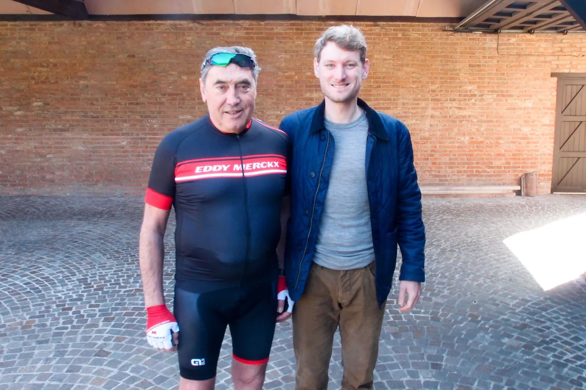
Timerekord cyklen er normalt udstillet på metrostationen i Bruxelles, der bærer navnet Eddy Merckx, men også her har onde marketingkræfter pillet ved mærkater og andre dele.
I forbindelse med udstillingen var cyklen dog erstattet af en moderne banecykel, så den originale kunne skinne i udstillingslokalet.
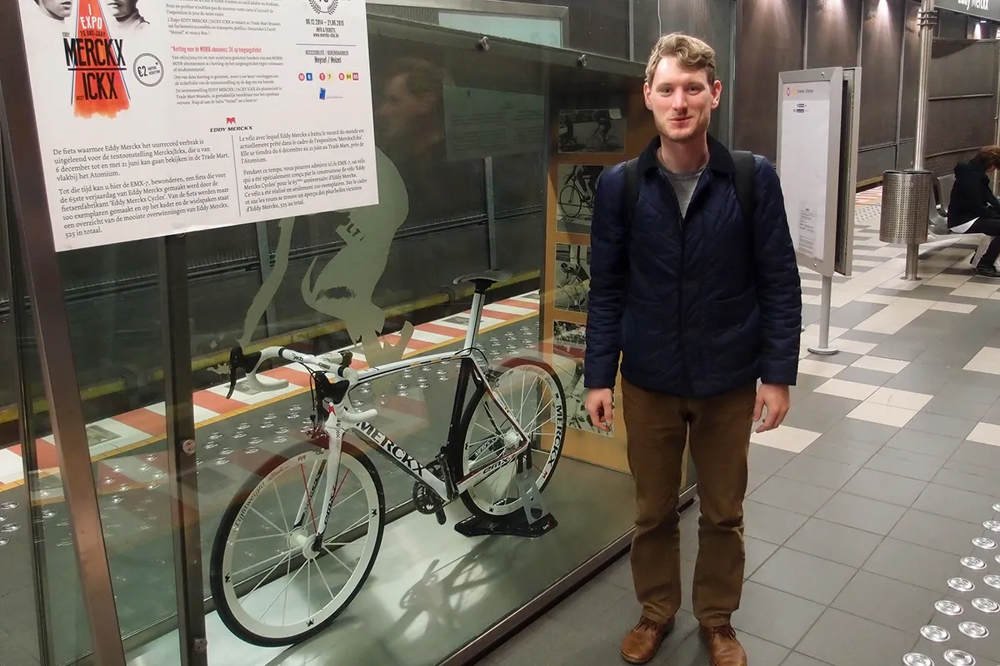
– Til udstillingen var cyklen sat tilbage til sin oprindelige tilstand, så vidt muligt, så det var nok den bedste chance man kunne få for at studere den originale version tæt på, udtaler løjtnanten.
Windsor trumfede Colnago i reklamestunt
Der er flere interessante historier omkring cyklen, der jo bl.a. ses bærende de uortodokse blå-hvide Windsor mærkater på kron- og saddelrør. Et reklamestunt som den Mexicanske cykelproducent fik gennemtrumfet i sidste øjeblik. Til stor ærgrelse for Ernesto Colnago, der havde arbejdet dag og nat i flere måneder for at få cyklen klar.

Hullerne i saddelpinden, de manglende støvhætter i nav og pedaler, samt den specialfremstillede frempind og den eksklusive version af Campagnolos sorte styrfittings var alle at se. Se billederne nederst i artiklen.
– Min er slet ikke en perfekt gengivelse, men jeg ville gerne vide hvad jeg havde at sigte efter. Jeg synes også Windsor mærkerne var for grimme til at smide på. Stellet er desuden også så langt fra Colnago som det næsten kan komme, men til gengæld er den mindst lige så hurtigt på de skrå brædder, udtaler Løjtnanten.
Pista del Tenente
Cyklen er bygget med Campagnolo Super Record og Pista dele, samt Cinelli saddel og styr. Fælge er Mavic og dæk er Continental Sonderklasse.
Gearingen er siden fotosessionen blevet ændret til 50/14 (gear 95,7)
Fotograf: Niels Bjørnsteen.

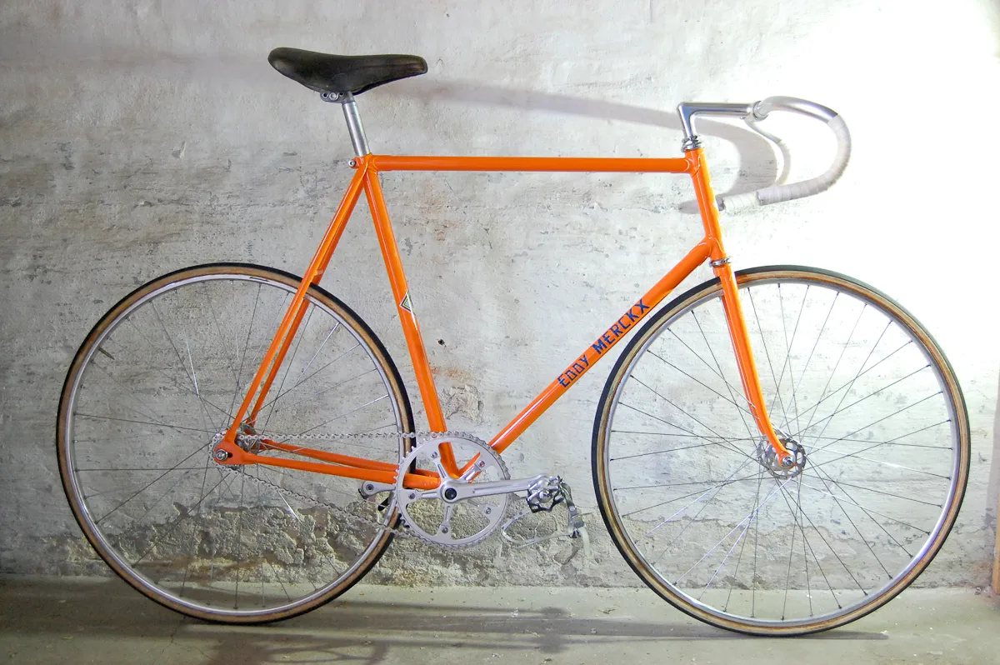

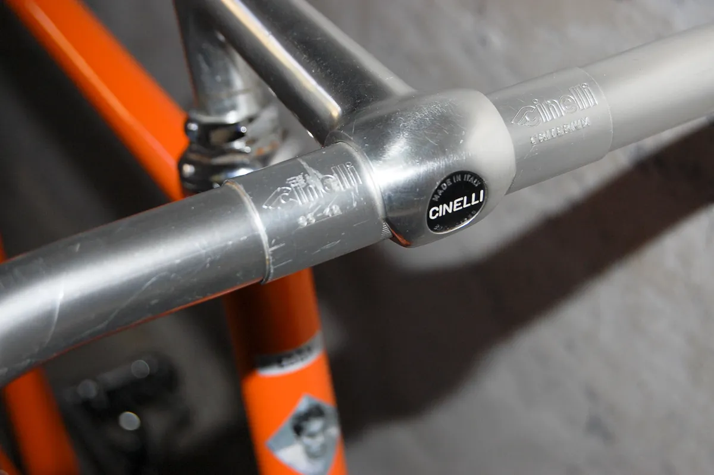

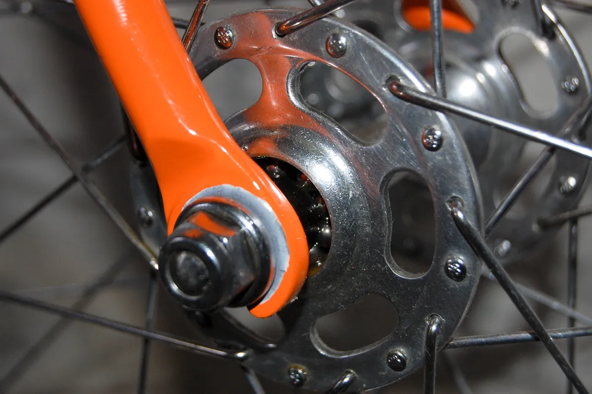

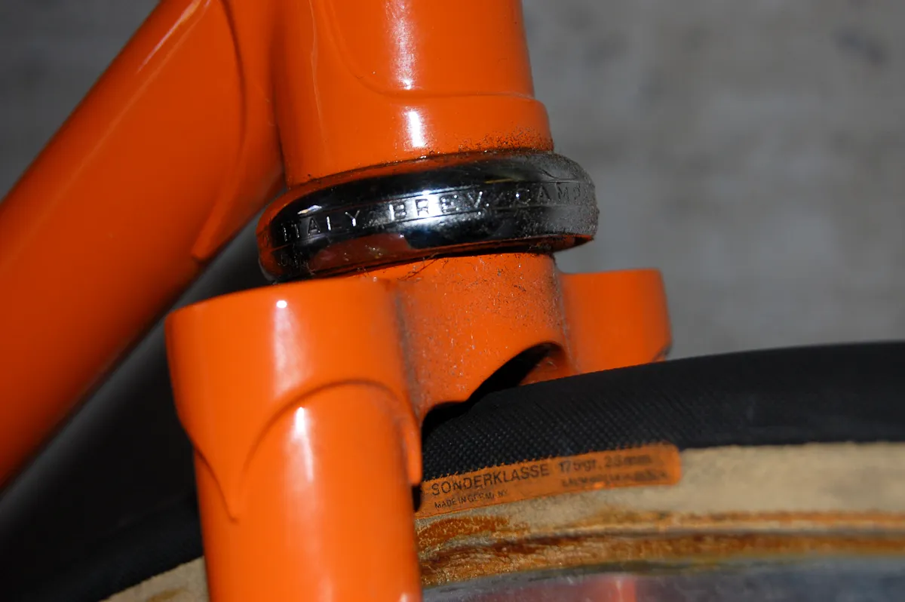

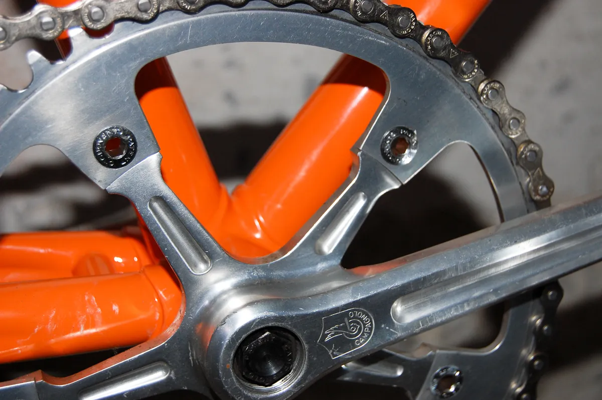

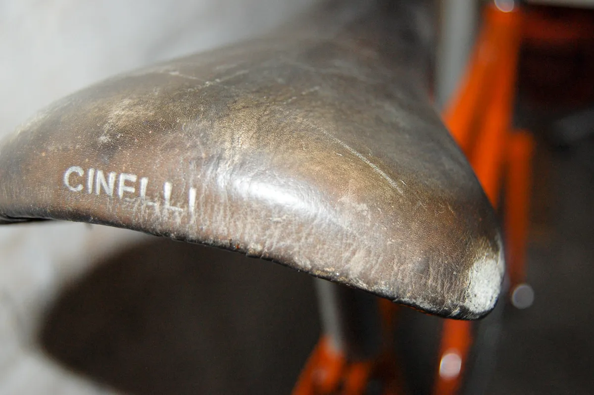

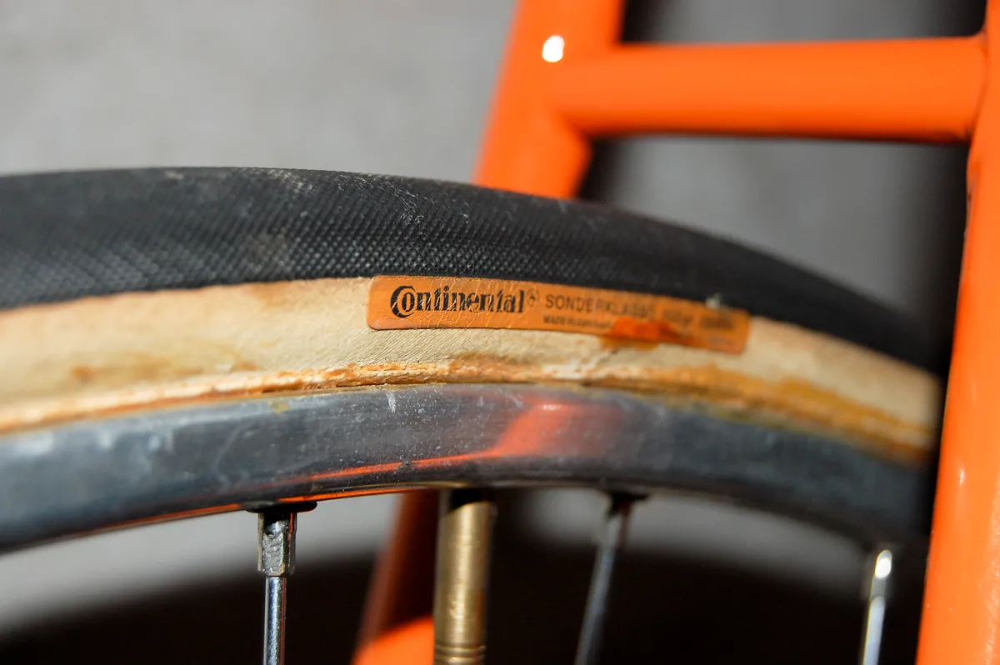

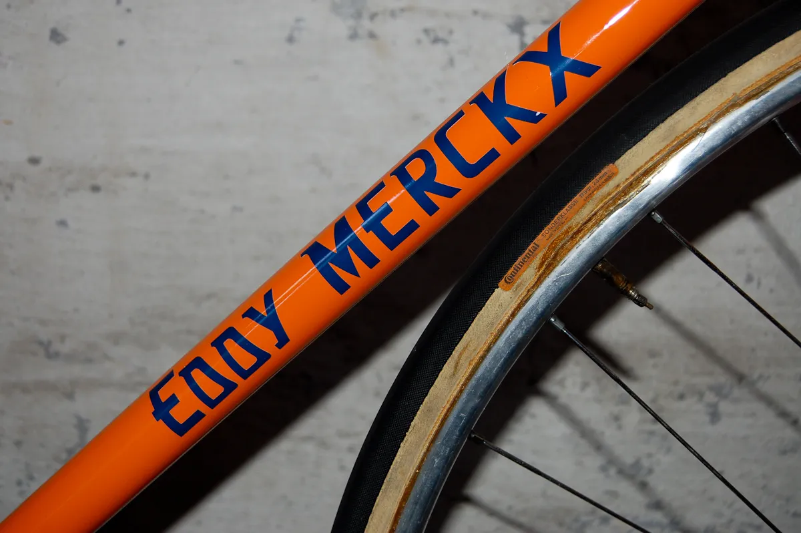

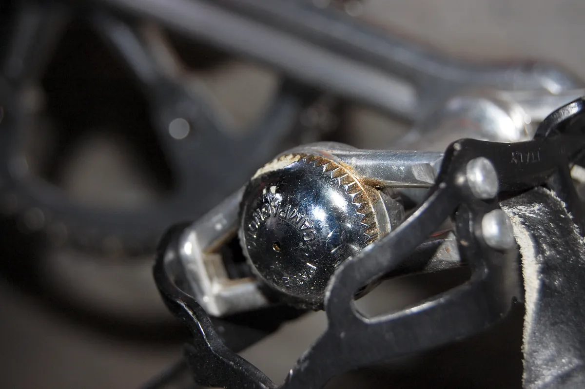

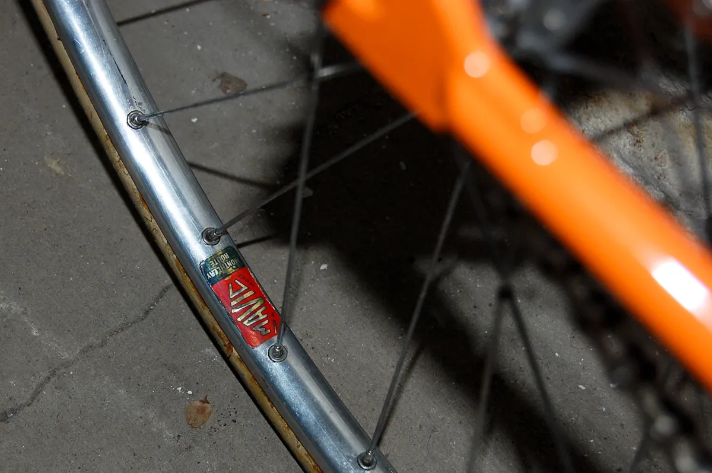